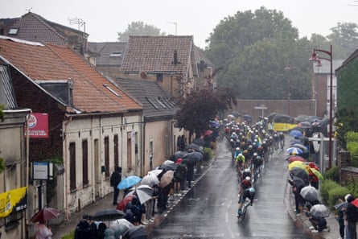

Mathieu van der Poel won stage two of the 2025 Tour de France into Boulogne-sur-Mer for Alpecin-Deceuninck, claiming the race lead from his teammate Jasper Philipsen after a quick succession of short climbs inside the final kilometres exploded the peloton on the approach to the Channel port.
The Dutchman thwarted Tadej Pogacar’s attempt to take the 100th win of his career, outsprinting the defending champion on the steady final climb of the Boulevard Auguste Mariette.
“The final was actually harder than I thought,” said Van der Poel. “I was really motivated. It’s four years since I won my first stage on the Tour, so it was about time I won a second one.”
Philipsen, who had started the stage in the yellow jersey after winning stage one to Lille on Saturday, was distanced in the closing kilometres and Van der Poel took the race lead from the Belgian sprinter.
“People said I was a favourite, but if you see which riders were in front, on the climbs, I did a really good job today to be there,” said Van der Poel, winner of the 2023 World Road Race Championships in Glasgow . “The climbs were harder than I expected and [ridden at] a hard pace. It was a nervous day again.”
Pogacar’s main rival, Jonas Vingegaard of Visma-Lease a Bike, followed the Slovenian across the finish line, with the Olympic champion, Remco Evenepoel, distanced on Saturday’s stage, showing greater vigilance to also finish in the front group.
Away from the Tour, Vingegaard’s wife, Trine Vingegaard Hansen, told the Danish newspaper Politiken that the Visma-Lease a Bike team is pushing her husband “too far”. “I’m afraid he’s burning the candle at both ends,” she said of the double Tour winner. “I think people sometimes forget the human being behind the athlete. It could all backfire.”
Primoz Roglic, only a year ago characterised as one of the Tour’s “big four”, finished in the lead group after ceding ground in Lille, but has done little so far to dispel the impression that he has relinquished any lingering hopes of contending for the overall title.
A wet Tour de France peloton during stage two.Photograph: Martin Divíšek/EPA
The Slovenian is the winner of the Vuelta a España four times and also the Giro d’Italia in 2023, but told the media as the race began that he “didn’t really care” and just wanted to “make it to Paris for a glass of champagne”. He has been anonymous so far.
The 35-year-old was, with his Bora Hansghrohe teammate Florian Lipowitz, among those who missed Saturday’s decisive split in the front group on the fast approach to Lille. “The guys were asleep,” Roglic’s sports director, Enrico Gasparotto, said of their costly error on the opening stage. “We talked about that stretch, the wind and the related dangers, but they were surprised. We are all aware of the opportunity we wasted: Roglic and Lipowitz lost the chance to gain time on Remco. We learned an important lesson.”
Worse befell the hapless French rider Benjamin Thomas, who crashed on Saturday’s stage while fighting his compatriot Mattéo Vercher for a single point in the mountains classification on Mont Cassel. He woke on Sunday morning to the news that his bike, along with 10 others from the Cofidis team, worth about €140,000 (£120,000), had been stolen from their vehicles overnight.
Ineos Grenadiers are also already on the back foot, having lost the time-trialling powerhouse Filippo Ganna on stage one to a concussion, while their team leader, Carlos Rodríguez, and the 2018 Tour winner, Geraint Thomas, both missed the decisive break in Saturday’s dramatic finale in Lille.
Both Rodríguez and Thomas lost a further 31sec to the front group on the run-in to Boulogne-sur-Mer, and are now 1min 16sec behind Pogacar after the opening weekend.
Sir Dave Brailsford, Ineos’s returning supremo, and Thomas, his management protege in waiting, already have much to ponder. “I should have stopped last year, to be honest,” the 39-year-old Welshman observed drily on Saturday.
Monday is another day, but there is yet another tricky stage to come, through the Nord and towards the Channel, this time to Dunkirk, in which the cobbles of Mont Cassel and the crosswinds off the sea will again play their part.